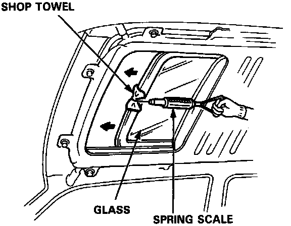
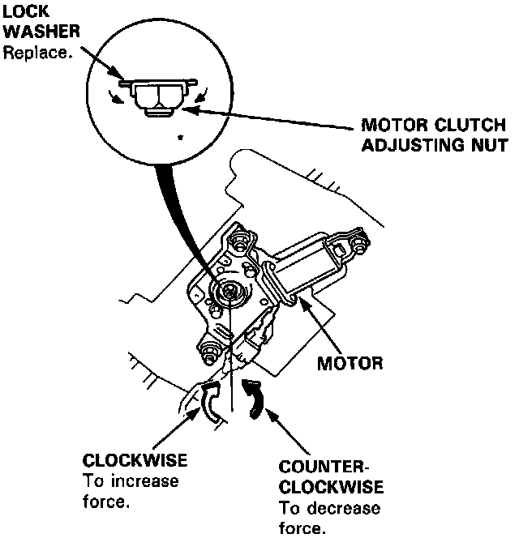

Closing Force Check (Motor Installed)
Closing Force Check (Motor Installed)
1. After installing all removed parts, have a helper hold the switch to close the glass while you measure force required to stop it. Attach a spring scale as shown. Read the force as soon as the glass stops moving, then immediately release the switch and spring scale.
CAUTION: When using a spring scale, protect the leading edge of the glass with a shop towel.
Closing Force: 200 - 300 N (20 - 30 kg, 44 - 55 lbs)

2. If the force is not within specification, install a new lock washer, adjust the tension by turning the motor clutch adjusting nut, then bend the lock washer against the motor clutch adjusting nut.